6. AWS EC2 の利用¶
6.1. AWS コンソールにログイン¶
https://aws.amazon.com を web ブラウザで開き、「コンソールにサインイン」をクリックします。

次の画面でアカウント、ユーザ名、パスワードを入力します。

AWS マネジメントコンソールで東京リージョンを選択しておきます。

6.2. EC2 インスタンスの起動¶
AWS マネジメントコンソールで EC2 サービスを選択します。
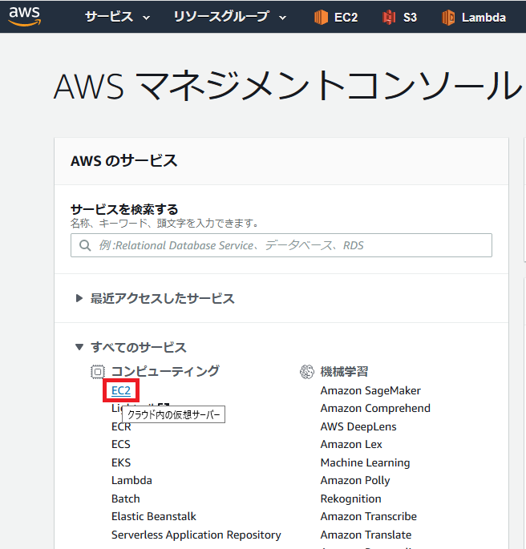
EC2 ダッシュボードが表示されますので、「インスタンスの作成」ボタンを押します。
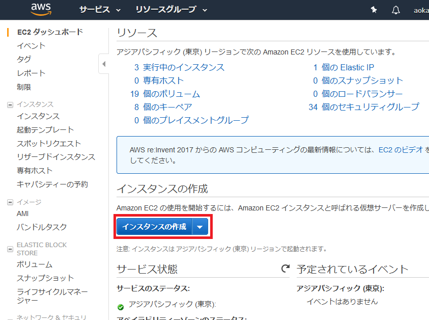

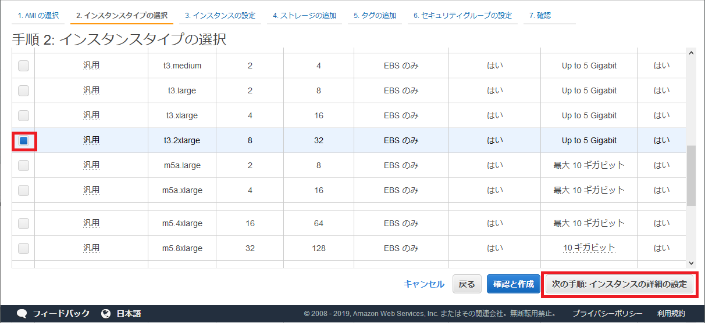
「インスタンスの詳細の設定」では何もせず、ページの最後にある「次の手順」ボタンを押します。


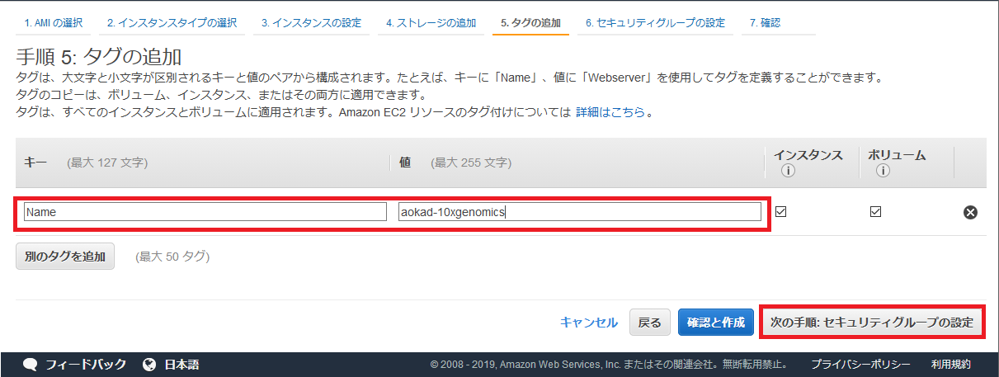
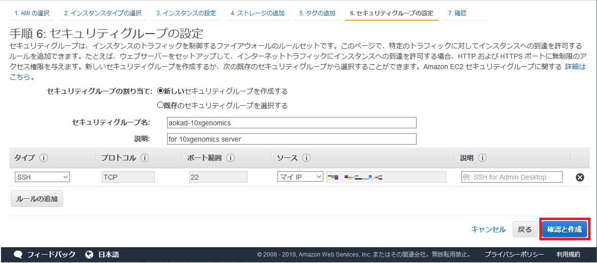
確認画面が表示されますので、問題なければ「起動」ボタンを押してください。

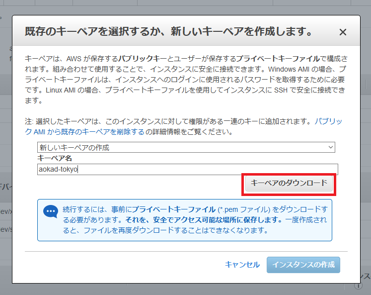
今回作成するキーペアはここでしかダウンロードできません。大切に保管してください。
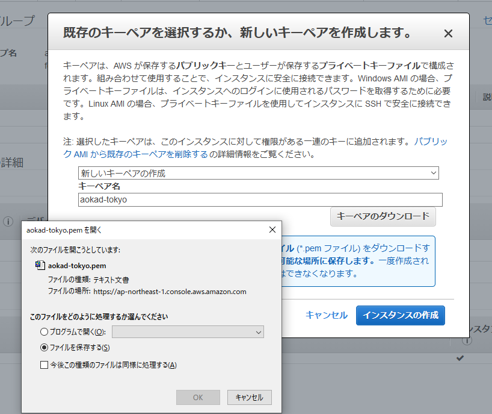
キーペアをダウンロードしたら、「インスタンスの作成」ボタンを押します。

作成ステータス画面が表示されます。「インスタンスの表示」ボタンを押します。

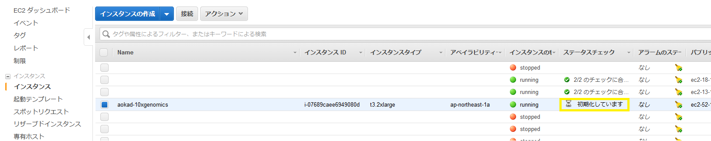
「チェックに合格しました」と表示されれば使用可能です。

6.3. 作成したインスタンスに SSH ログイン¶
先ほどのインスタンスリストで今回作成したインスタンスのパブリック DNS をコピーしておきます。
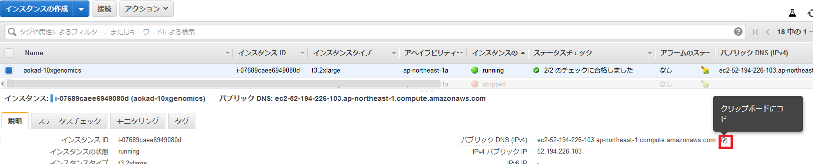
ターミナルを開きます。
- 先ほどダウンロードしたキーペアのパーミッションを変更します。ここでは
~/.ssh/の下に保存していますが、適宜読み替えてください。 - 次に
sshコマンドで作成したインスタンスにログインします。Amazon Linux の場合、ユーザ名はec2-user固定です。サーバのアドレスは先ほどコピーしたパブリック DNS を張り付けてください。 続けますかと聞かれたら
yesと入力してください。

ログインできましたか？
6.4. work ディレクトリの準備¶
アタッチしたディスクが存在するかを確認します。
$ ls /dev/sdb
/dev/sdb
フォーマットします。
$ sudo mkfs -t ext4 /dev/sdb
mke2fs 1.42.9 (28-Dec-2013)
Filesystem label=
OS type: Linux
Block size=4096 (log=2)
Fragment size=4096 (log=2)
Stride=0 blocks, Stripe width=0 blocks
65536000 inodes, 262144000 blocks
13107200 blocks (5.00%) reserved for the super user
First data block=0
Maximum filesystem blocks=2409627648
8000 block groups
32768 blocks per group, 32768 fragments per group
8192 inodes per group
Superblock backups stored on blocks:
32768, 98304, 163840, 229376, 294912, 819200, 884736, 1605632, 2654208,
4096000, 7962624, 11239424, 20480000, 23887872, 71663616, 78675968,
102400000, 214990848
Allocating group tables: done
Writing inode tables: done
Creating journal (32768 blocks): done
Writing superblocks and filesystem accounting information: done
work ディレクトリにマウントします。
$ sudo mkdir /work
$ sudo mount /dev/sdb /work
$ df -h
Filesystem Size Used Avail Use% Mounted on
devtmpfs 16G 0 16G 0% /dev
tmpfs 16G 0 16G 0% /dev/shm
tmpfs 16G 448K 16G 1% /run
tmpfs 16G 0 16G 0% /sys/fs/cgroup
/dev/nvme0n1p1 8.0G 1.2G 6.8G 15% /
tmpfs 3.2G 0 3.2G 0% /run/user/0
tmpfs 3.2G 0 3.2G 0% /run/user/1000
/dev/nvme1n1 985G 77M 935G 1% /work
work ディレクトリのパーミッションを変更します。
$ touch /work/file1
touch: cannot touch ‘/work/file1’: Permission denied
$ sudo chown ec2-user /work
$ touch /work/file1
$ ls -l /work
total 16
-rw-rw-r-- 1 ec2-user ec2-user 0 Jul 31 02:35 file1
drwx------ 2 root root 16384 Jul 31 02:28 lost+found
6.5. 片付け¶
6.5.1. ターミナルから抜ける¶
exit でログアウトします。
$ exit
logout
Connection to ec2-52-194-226-103.ap-northeast-1.compute.amazonaws.com closed.
6.5.2. インスタンスを停止する¶
※完全に削除したい場合はこの項目を飛ばして、次の 「インスタンスを削除する」に進んでください。
AWS マネジメントコンソールから作成したインスタンスを選択し、「アクション」→「インスタンスの状態」とたどって「停止」をクリックします。

確認画面が表示されますので、停止したいインスタンスを十分に確認したら「停止する」ボタンを押します。

停止処理が始まりました。

完全に停止すると「stopped」と表示されます。

6.5.3. インスタンスを削除する¶
必要のないインスタンスは削除します。
AWS マネジメントコンソールから作成したインスタンスを選択し、「アクション」→「インスタンスの状態」とたどって「終了」をクリックします。

確認画面が表示されますので、削除したいインスタンスを十分に確認したら「はい、削除する」ボタンを押します。

削除されたインスタンスは「terminated」と表示されます。一定期間表示されますが、その後リストからも消えます。
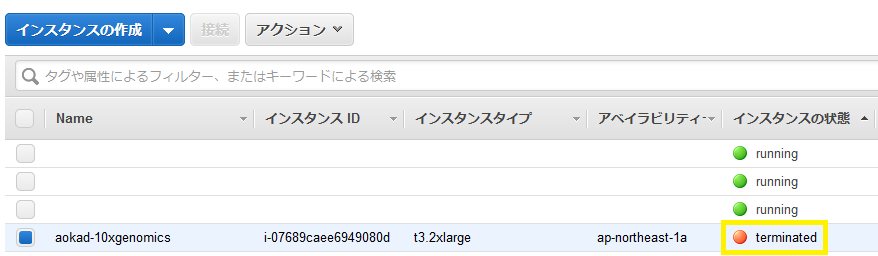
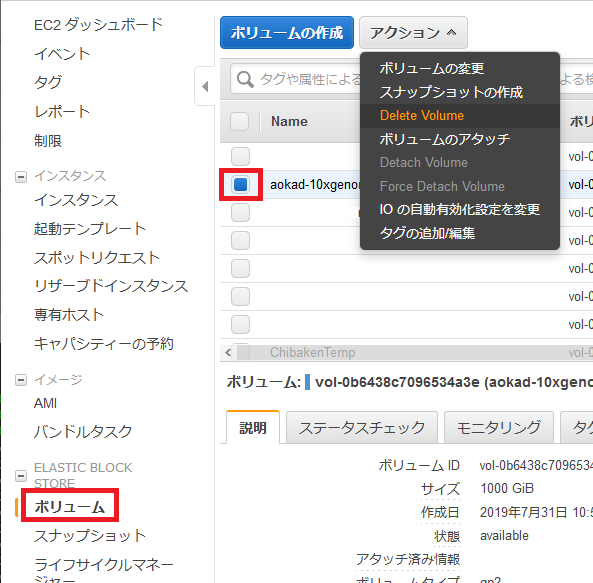
確認画面が表示されますので、内容を確認したら、「はい、削除する」ボタンを押します。

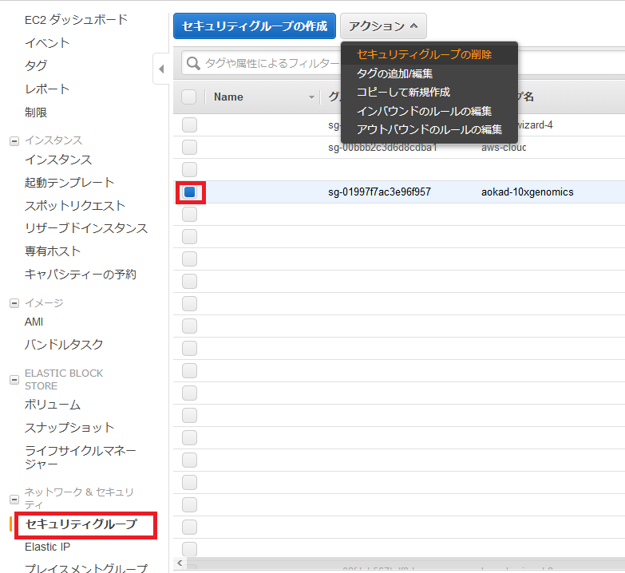
確認画面が表示されますので、内容を確認したら、「はい、削除する」ボタンを押します。
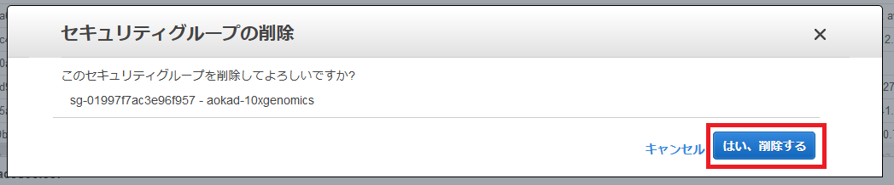
今回作成したキーペアを削除します。
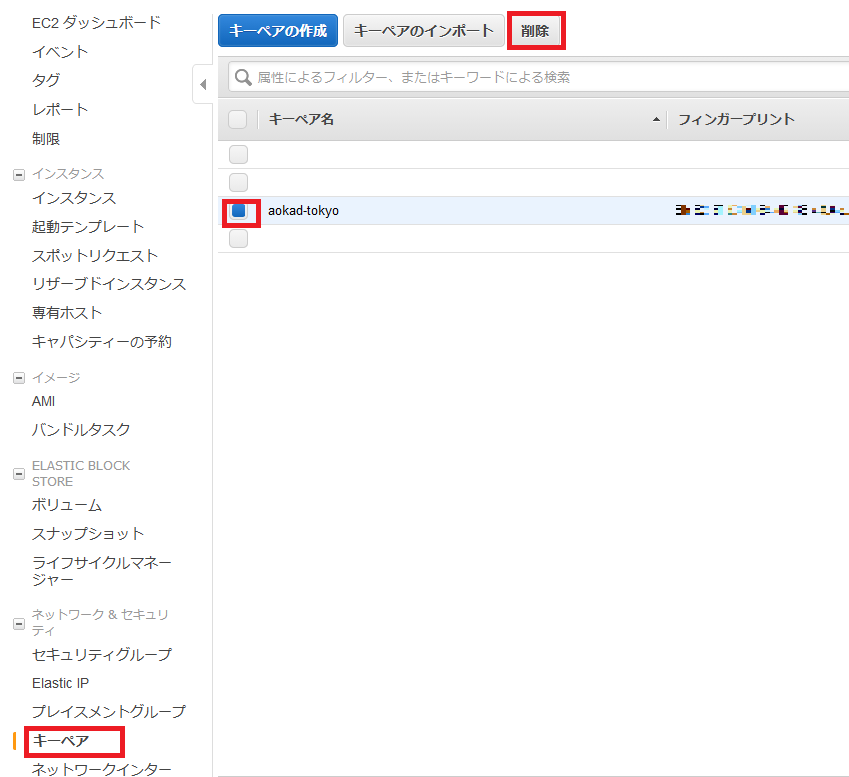
確認画面が表示されますので、内容を確認したら、「はい」ボタンを押します。